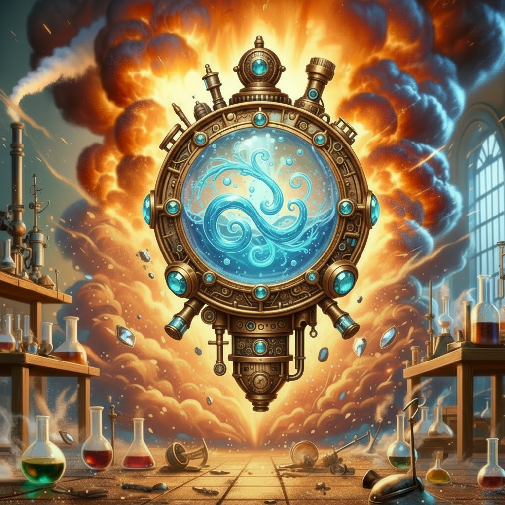

Ein elegantes, tragbares Becken aus poliertem Silber mit einer Oberfläche, die das Mondlicht auf faszinierende Weise reflektiert. Milo hat es alchemistisch behandelt, um mondgesegnetes Wasser zu halten und zu konzervieren. Komplizierte Mondphasen-Symbole sind um den Rand eingraviert und leuchten schwach, wenn das Becken aktiv ist.
Magische Eigenschaften
Mondlicht-Sammlung
Das Becken füllt sich automatisch mit mondgesegnetem Wasser während jeder Mondphase. Das Wasser behält seine magischen Eigenschaften, solange es im Becken verbleibt.
Wahrsagen nach Verlorenen (1x wöchentlich)
Einmal pro Woche kannst du das Becken verwenden, um nach einer verlorenen oder vermissten Person zu suchen. Konzentriere dich auf die gesuchte Person und blicke in das mondgesegnete Wasser. Du erhältst Visionen von ihrem ungefähren Aufenthaltsort oder ihrem aktuellen Zustand.
🌊 Sicherer Übungsraum
Das Becken bildet eine 10-Fuß-Aura um sich herum, in der du deine Wassermagie sicher und unentdeckt praktizieren kannst. Magische Sensoren und Erkennungszauber funktionieren in diesem Bereich nicht, und Wassermagie hinterlässt keine verräterischen Spuren.
Ich habe deine Verbindung zur Mondmagie studiert und das hier erschaffen, um dir zu helfen. Es sollte bei deiner Suche helfen und dir einen sicheren Ort geben, um deine Fähigkeiten zu üben.
- Milo
- Milo